Introduction
In Geneva (Switzerland), we are lucky to have SITG, a website with tons of geographical open datasets. I wanted to try my hand at doing maps in R for some time now, but could not find a way that felt integrated with the other packages I usually work with. Importing .sh files was a challenge (for me), as well as plotting the data in ggplot2 rather than with a dedicated map library like tmap.
All that changed with sf, a package that implements Simple Features for R. As I know nothing about geographic information systems, all I can say is: if you are already using the tidyverse, sf makes it really straightforward to convert geographical datasets to data.frames/tibbles that you can then manipulate with the ease of your usual toolbox (dplyr, tidyr…).
As I walked around Geneva countryside, I stumbled upon a point of view with several information boards. One showed a little map that I thought would make a good first example.
Thinking in layers - like always with ggplot2 - it looks like we need the following things: 1. borders of each communal districts in Geneva 2. borders of water (lake and main rivers) 3. areas of buildings 4. areas of forests
Installing sf
If you already have all dependencies, it might be as straightforward as installing the package sf. On Ubuntu, it was a bit of a pain, especially because I did not read the instructions first. After adding libpng-dev on top of the other libraries, the sf install worked in RStudio.
Mapping communal districts
The polygons of all Geneva communal districts are available here, named ‘COMMUNES GENEVOISES (GEOMETRIE SIMPLIFIEE)’)“. I downloaded the SHP version. Make sure you place all the files (not just the .shp and .shx) in the same directory..shp and .shx are enough to get the polygones, but you would miss all the metadata (like the names of the communes). Using sf function st_read, we can import them into R.
# Load sf and dplyr quietly
suppressMessages(library(sf))
suppressMessages(library(dplyr))
# Load the communes dataset
communes <- st_read("../data/GEO_COMMUNES_GE_SIMPLIFIEES.shp")## Reading layer `GEO_COMMUNES_GE_SIMPLIFIEES' from data source `/home/xadam/dev/GitHub/ii_src/content/data/GEO_COMMUNES_GE_SIMPLIFIEES.shp' using driver `ESRI Shapefile'
## Simple feature collection with 48 features and 7 fields
## geometry type: MULTIPOLYGON
## dimension: XY
## bbox: xmin: 2485410 ymin: 1109645 xmax: 2512974 ymax: 1135578
## epsg (SRID): NA
## proj4string: +proj=somerc +lat_0=46.95240555555556 +lon_0=7.439583333333333 +k_0=1 +x_0=2600000 +y_0=1200000 +ellps=bessel +units=m +no_defsWe can see that the file was successfully loaded, and that we have 48 geometry (of type MULTIPOLYGON) with 7 columns.
Our usual dataframe functions (dim, names…) work on the sf object. With glimpse from dplyr, we can get a sense of what each column contains (e.g COMMUNE has the names of communes).
# a glimpse at the column content
glimpse(communes)## Observations: 48
## Variables: 8
## $ COMMUNE <fctr> Corsier, Carouge, Puplinge, Perly-Certoux, Genève-...
## $ NO_COMM <int> 19, 8, 39, 35, 22, 21, 28, 13, 41, 7, 29, 47, 33, 2...
## $ ABREVIATIO <fctr> Cr, Ca, Pu, P.C., E.V., V.G., He, C.Bg, Sy, Bx, Ju...
## $ NO_COM_FED <int> 6619, 6608, 6636, 6632, 6621, 6621, 6625, 6613, 663...
## $ LIEN_WWW <fctr> http://www.geneve-communes.ch, http://www.geneve-c...
## $ SHAPE_AREA <dbl> 2735462, 2703700, 2669651, 2542247, 2538140, 252017...
## $ SHAPE_LEN <dbl> 8817.079, 8682.215, 8290.230, 7353.972, 7805.008, 8...
## $ geometry <simple_feature> MULTIPOLYGON (((2506472.244..., MULTIPOL...The dplyr verbs are also available. So you can filter, rename, mutate… and always get back a sf object.
# Filter to see only commune "Carouge"
communes %>% filter(COMMUNE == "Carouge") %>% head## Simple feature collection with 1 feature and 7 fields
## geometry type: MULTIPOLYGON
## dimension: XY
## bbox: xmin: 2498785 ymin: 1113794 xmax: 2500854 ymax: 1116325
## epsg (SRID): NA
## proj4string: +proj=somerc +lat_0=46.95240555555556 +lon_0=7.439583333333333 +k_0=1 +x_0=2600000 +y_0=1200000 +ellps=bessel +units=m +no_defs
## COMMUNE NO_COMM ABREVIATIO NO_COM_FED LIEN_WWW
## 1 Carouge 8 Ca 6608 http://www.geneve-communes.ch
## SHAPE_AREA SHAPE_LEN geometry
## 1 2703700 8682.215 MULTIPOLYGON (((2499509.292...# Filter to see only communes with "Genève" in their name
communes %>% filter(grepl("^genève", COMMUNE, ignore.case=T)) %>% head## Simple feature collection with 4 features and 7 fields
## geometry type: MULTIPOLYGON
## dimension: XY
## bbox: xmin: 2497477 ymin: 1114844 xmax: 2502538 ymax: 1120889
## epsg (SRID): NA
## proj4string: +proj=somerc +lat_0=46.95240555555556 +lon_0=7.439583333333333 +k_0=1 +x_0=2600000 +y_0=1200000 +ellps=bessel +units=m +no_defs
## COMMUNE NO_COMM ABREVIATIO NO_COM_FED
## 1 Genève-Eaux-Vives 22 E.V. 6621
## 2 Genève-Cité 21 V.G. 6621
## 3 Genève-Petit-Saconnex 23 P.S 6621
## 4 Genève-Plainpalais 24 Pl. 6621
## LIEN_WWW SHAPE_AREA SHAPE_LEN
## 1 http://www.geneve-communes.ch 2538140 7805.008
## 2 http://www.geneve-communes.ch 2520179 8975.992
## 3 http://www.geneve-communes.ch 6233939 13848.284
## 4 http://www.geneve-communes.ch 4628296 14154.933
## geometry
## 1 MULTIPOLYGON (((2502293.896...
## 2 MULTIPOLYGON (((2499898.226...
## 3 MULTIPOLYGON (((2499654.219...
## 4 MULTIPOLYGON (((2499714.537...# Select only COMMUNE column (note that geometry is kept)
# I also had to use select.sf rather than the generic select
communes %>% select.sf(COMMUNE) %>% head## Simple feature collection with 6 features and 1 field
## geometry type: MULTIPOLYGON
## dimension: XY
## bbox: xmin: 2494595 ymin: 1111735 xmax: 2508349 ymax: 1125219
## epsg (SRID): NA
## proj4string: +proj=somerc +lat_0=46.95240555555556 +lon_0=7.439583333333333 +k_0=1 +x_0=2600000 +y_0=1200000 +ellps=bessel +units=m +no_defs
## COMMUNE geometry
## 1 Corsier MULTIPOLYGON (((2506472.244...
## 2 Carouge MULTIPOLYGON (((2499509.292...
## 3 Puplinge MULTIPOLYGON (((2507415.896...
## 4 Perly-Certoux MULTIPOLYGON (((2496407.883...
## 5 Genève-Eaux-Vives MULTIPOLYGON (((2502293.896...
## 6 Genève-Cité MULTIPOLYGON (((2499898.226...# Mutate names to lowercase
communes %>%
mutate(COMMUNE = stringr::str_to_lower(COMMUNE)) %>%
head## Simple feature collection with 6 features and 7 fields
## geometry type: MULTIPOLYGON
## dimension: XY
## bbox: xmin: 2494595 ymin: 1111735 xmax: 2508349 ymax: 1125219
## epsg (SRID): NA
## proj4string: +proj=somerc +lat_0=46.95240555555556 +lon_0=7.439583333333333 +k_0=1 +x_0=2600000 +y_0=1200000 +ellps=bessel +units=m +no_defs
## COMMUNE NO_COMM ABREVIATIO NO_COM_FED
## 1 corsier 19 Cr 6619
## 2 carouge 8 Ca 6608
## 3 puplinge 39 Pu 6636
## 4 perly-certoux 35 P.C. 6632
## 5 genève-eaux-vives 22 E.V. 6621
## 6 genève-cité 21 V.G. 6621
## LIEN_WWW SHAPE_AREA SHAPE_LEN
## 1 http://www.geneve-communes.ch 2735462 8817.079
## 2 http://www.geneve-communes.ch 2703700 8682.215
## 3 http://www.geneve-communes.ch 2669651 8290.230
## 4 http://www.geneve-communes.ch 2542247 7353.972
## 5 http://www.geneve-communes.ch 2538140 7805.008
## 6 http://www.geneve-communes.ch 2520179 8975.992
## geometry
## 1 MULTIPOLYGON (((2506472.244...
## 2 MULTIPOLYGON (((2499509.292...
## 3 MULTIPOLYGON (((2507415.896...
## 4 MULTIPOLYGON (((2496407.883...
## 5 MULTIPOLYGON (((2502293.896...
## 6 MULTIPOLYGON (((2499898.226...To learn more about applying dplyr verbs to sf objects, see this article from the documentation and Strimas blog post.
To map the polygons, there is now a dedicated geom geom_sf in ggplot2. This makes mapping geo areas as simple as lines (geom_line) or points (geom_point). Note that, at this stage, you need the development version of ggplot2.
# if you don't have the development version
# install.packages("devtools")
# devtools::install_github("tidyverse/ggplot2")
library(ggplot2)
# Create a plot
ggplot() +
# add a layer with lightgrey communal polygons
geom_sf(data=communes) +
# add a title
labs(title="Communals districts of Geneva")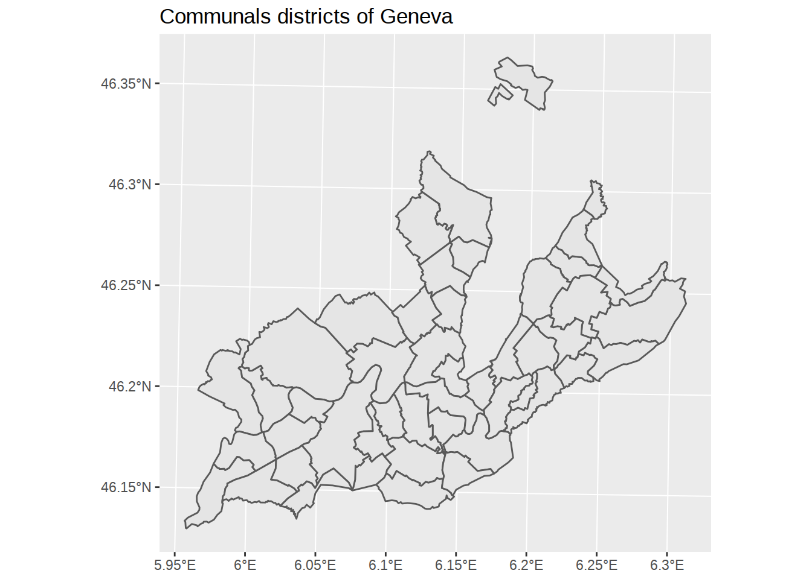
geom_sf accepts styling arguments: fill for the color inside the polygons, color for the color of the polygons borders.
ggplot() +
geom_sf(data=communes, fill="darkred", color="gold") +
labs(title="Communals districts of Geneva")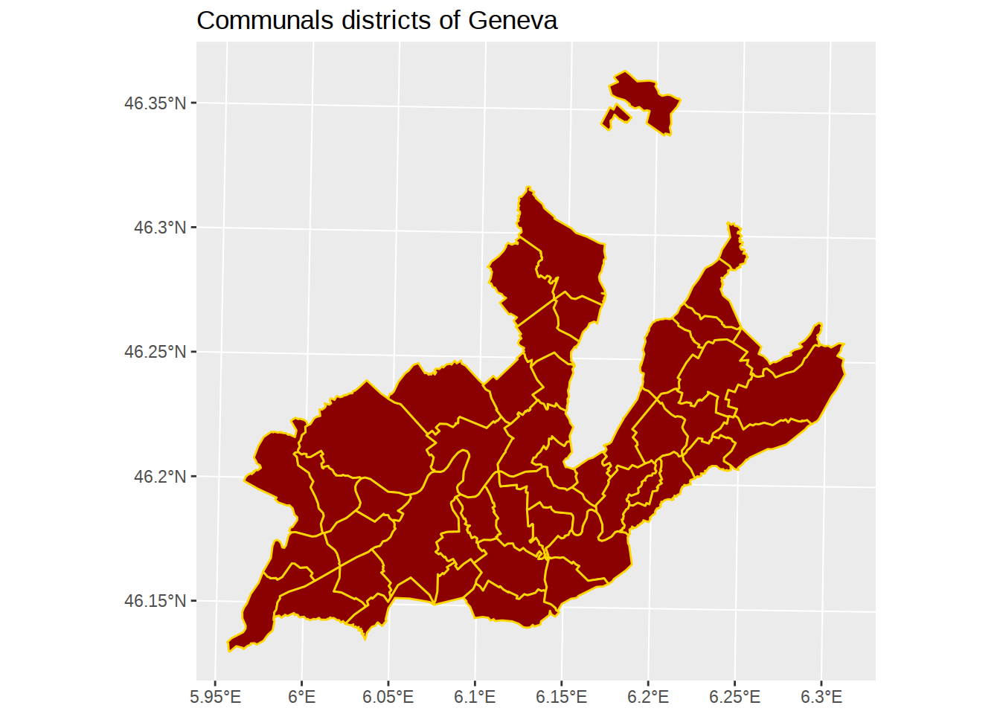 Great! But here we notice something surprising: districts don’t overlap the lake, but they do overlap the rivers. Let’see how we can fix this.
Removing rivers
The polygons of Geneva lake and main rivers (Rhône and Arve) are available here, named ‘EMPRISE DU LAC LEMAN (Petit-lac)’. We can load them with st_read again.
waters <- st_read("../data/GEO_LAC.shp")## Reading layer `GEO_LAC' from data source `/home/xadam/dev/GitHub/ii_src/content/data/GEO_LAC.shp' using driver `ESRI Shapefile'
## Simple feature collection with 3 features and 3 fields
## geometry type: POLYGON
## dimension: XY
## bbox: xmin: 2485388 ymin: 1110037 xmax: 2510891 ymax: 1136120
## epsg (SRID): NA
## proj4string: +proj=somerc +lat_0=46.95240555555556 +lon_0=7.439583333333333 +k_0=1 +x_0=2600000 +y_0=1200000 +ellps=bessel +units=m +no_defsglimpse(waters)## Observations: 3
## Variables: 4
## $ NOM <fctr> Léman, Arve, Rhône
## $ SHAPE_AREA <dbl> 67916036.2, 638356.6, 3148365.7
## $ SHAPE_LEN <dbl> 64418.43, 21388.25, 59438.90
## $ geometry <simple_feature> POLYGON ((2510891.1652 1134..., POLYGON ...There are only 3 geometries: Léman (the lake), Arve and Rhône (the main rivers). Let’s see what they looks like:
# Create a plot
ggplot() +
# add a layer with blue water polygons
geom_sf(data=waters) +
# add a title
labs(title="Lake and rivers of Geneva")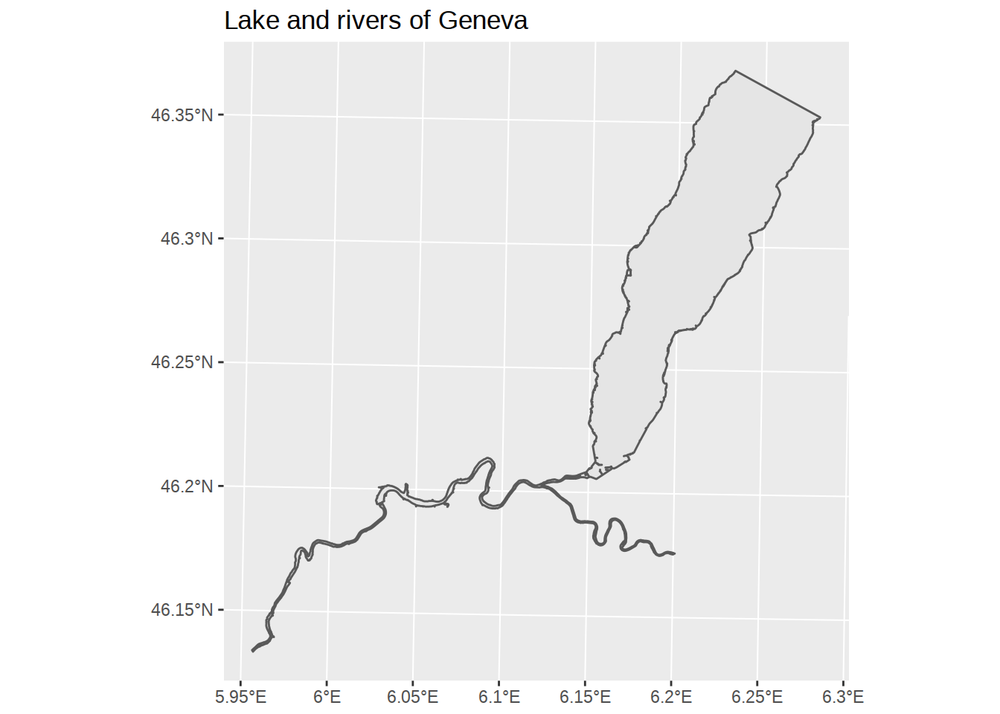
Using dplyr again, let’s filter to see only the rivers.
# Create a plot
ggplot() +
# add a layer with blue water polygons
geom_sf(data= waters %>% filter(NOM != "Léman")) +
# add a title
labs(title="Lake and rivers of Geneva")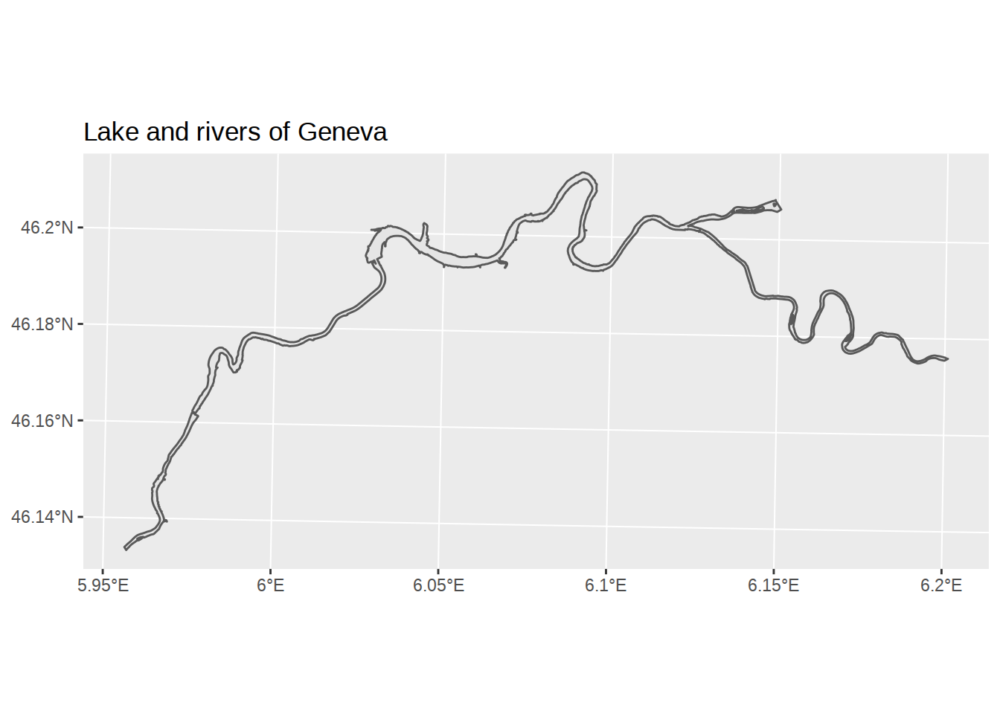
We could map waters on top of the communes. But we could also explore geometry calculations and remove it from the commune shapes. The sf package has functions to combine polygon sets into new sf object. The functions are described in this vignette. You can do things like union (st_union), intersection (st_intersection), difference (st_difference)… Here we will calculate the difference, which keeps everything but the intersection. Note that we need to apply st_union to waters so that both rivers are considered “grouped”, otherwise nothing will be removed since communes are never overlapped by both rivers in the same place.
communes_no_water <-
communes %>%
st_difference(st_union(waters))## Warning: attribute variables are assumed to be spatially constant
## throughout all geometriesggplot() +
geom_sf(data=communes_no_water) +
labs(title="Communes without rivers")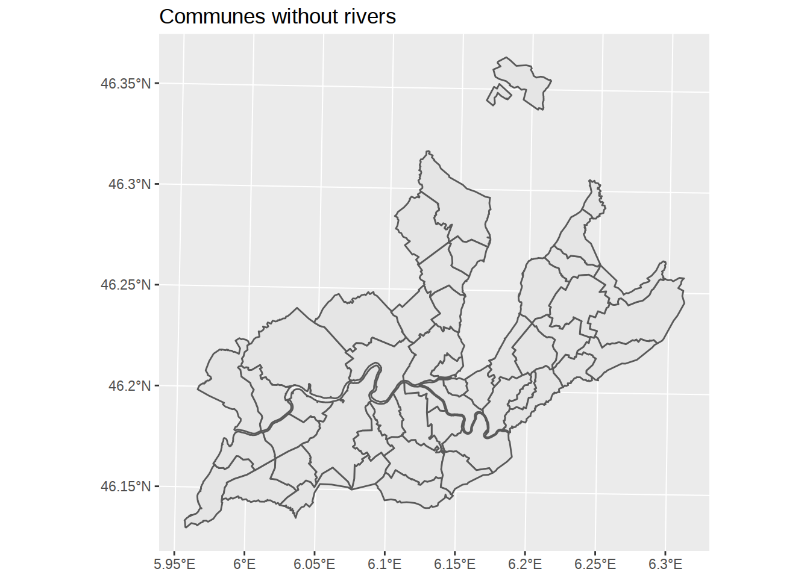
# coord_sf(xlim=c(2490000,2495000), ylim=c(1115000,1120000), datum = st_crs(communes_no_water))Zooming on the map
To check that rivers were correctly removed, we might want to “zoom” on the map. Along geom_sf, a dedicated coordinate function coord_sf was added, which lets us restrict coordinates.
Simplify polygons
This is nearly too detailed for the shematic look we are after. To simplify polygons, we can use the rmapshaper package (on Ubuntu, I had to install dependencies libv8-dev and protolite). rmapshaper lets us access the mapshaper javascript library, which provide tools to simplify and modify polygons. We will mainly use the simplify function ms_simplify. Arguments for ms_simplify are described in the vignette. One important feature
library(rmapshaper)
library(gridExtra)##
## Attaching package: 'gridExtra'## The following object is masked from 'package:dplyr':
##
## combinecommunes_no_water_simplified <-
communes_no_water %>%
ms_simplify(keep_shapes=T, keep=0.02)
# using grid.arrange from gridExtra
# we can plot the two version side by side
chart_original <-
ggplot() +
geom_sf(data=communes_no_water) +
labs(title="Original polygons",
subtitle="No ms_simplify")
chart_simplified <-
ggplot() +
geom_sf(data=communes_no_water_simplified) +
labs(title="Simplified polygons",
subtitle="ms_simplify at keep=0.02")
grid.arrange(chart_original, chart_simplified, ncol=2)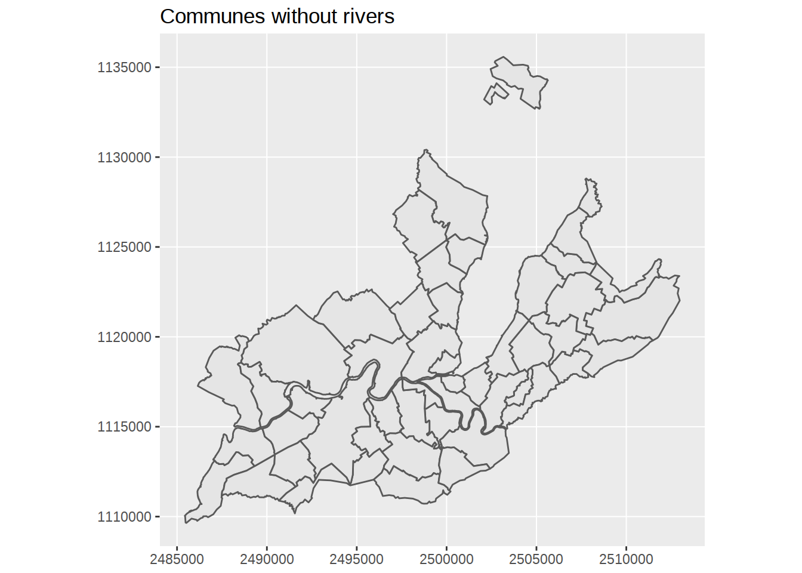
Map buildings and forests
The polygons of forest and building zones are available here, named ‘AGGLO - ZONES D’AFFECTATION SIMPLIFIEES DE L’AGGLOMERATION FRANCO-VALDO-GENEVOISE’. We can load them with st_read again.
zones <- st_read("../data/AGGLO_ZONE_AFF_SIMPLIFIEE.shp")## Reading layer `AGGLO_ZONE_AFF_SIMPLIFIEE' from data source `/home/xadam/dev/GitHub/ii_src/content/data/AGGLO_ZONE_AFF_SIMPLIFIEE.shp' using driver `ESRI Shapefile'
## Simple feature collection with 24474 features and 8 fields
## geometry type: POLYGON
## dimension: XYZ
## bbox: xmin: 2465760 ymin: 1089315 xmax: 2531322 ymax: 1155694
## epsg (SRID): NA
## proj4string: +proj=somerc +lat_0=46.95240555555556 +lon_0=7.439583333333333 +k_0=1 +x_0=2600000 +y_0=1200000 +ellps=bessel +units=m +no_defsglimpse(zones)## Observations: 24,474
## Variables: 9
## $ COMMUNE <fctr> CROZET, CROZET, CROZET, CROZET, CROZET, CROZET, CR...
## $ LIBFVG <fctr> Zone de centre village, Zone agricole ou viticole,...
## $ SOURCE <fctr> PLU, PLU, PLU, PLU, PLU, PLU, PLU, PLU, PLU, PLU, ...
## $ CODECOM <fctr> 01135, 01135, 01135, 01135, 01135, 01135, 01135, 0...
## $ CODEFVG <fctr> B, N1, N2, N2, E1y, N2, N2, N2, E1, E1, E1, E1, y,...
## $ CODEURB <fctr> Ua, Na, N, N, 1AUt, Nh, Nh, Nh, Nt, Ut, Ut, Ut, 2A...
## $ SHAPE_AREA <dbl> 28170.5386, 6904.7535, 2839.2095, 4186.5152, 23454....
## $ SHAPE_LEN <dbl> 1174.0810, 335.0173, 244.3988, 296.8529, 1367.4976,...
## $ geometry <simple_feature> POLYGON Z ((2489475.4124 11..., POLYGON ...Lots of things happening here. Among the variables, LIBFVG seems to contains the zone types. If we extract the column (encoded as factor), we can use levels to see unique values.
zones$LIBFVG %>%
levels()## [1] "Zone à affectation différée"
## [2] "Zone aéroportuaire"
## [3] "Zone agricole ou viticole"
## [4] "Zone centrale à très forte densité"
## [5] "Zone d'activités économiques ou touristiques"
## [6] "Zone de centre historique"
## [7] "Zone de centre village"
## [8] "Zone d'équipements publics, sportifs ou de loisirs"
## [9] "Zone de verdure"
## [10] "Zone future centrale à très forte densité"
## [11] "Zone future d'activités économiques ou touristiqu"
## [12] "Zone future de centre village"
## [13] "Zone future d'équipements publics, sportifs ou de"
## [14] "Zone future péricentrale à forte densité"
## [15] "Zone future péricentrale à moyenne densité"
## [16] "Zone future périurbaine à faible densité"
## [17] "Zone liée aux grandes infrastructures de transport"
## [18] "Zone naturelle ou forestière"
## [19] "Zone péricentrale à forte densité"
## [20] "Zone péricentrale à moyenne densité"
## [21] "Zone périurbaine à faible densité"Let’s isolate the building zones and add it as an additional geom_sf layer to our map (grey fill, no borders):
building_zones <- c(
"Zone périurbaine à faible densité",
"Zone péricentrale à moyenne densité",
"Zone péricentrale à forte densité",
"Zone de centre village",
"Zone centrale à très forte densité",
"Zone de centre historique",
"Zone aéroportuaire"
)
ggplot() +
geom_sf(data=communes_no_water_simplified) +
geom_sf(data=zones %>% filter(LIBFVG %in% building_zones),
fill="grey", color=NA)
First thing to note: the area covered by the zones polygons is way larger than our little Geneva canton. Previously we used st_difference to find the non-overlapping area, let’s use st_intersection to find overlapping area and “crop” the zones polygons to Geneva area. We will also slightly simplify the polygons with ms_simplify, so they don’t look too detailled compared to our commune borders.
buildings_geneva <-
zones %>%
filter(LIBFVG %in% building_zones) %>%
ms_simplify(keep_shapes = T, keep=0.0001) %>%
st_intersection(st_union(communes_no_water_simplified))## Warning: attribute variables are assumed to be spatially constant
## throughout all geometriesggplot() +
geom_sf(data=communes_no_water_simplified) +
geom_sf(data=buildings_geneva, fill="grey", color=NA)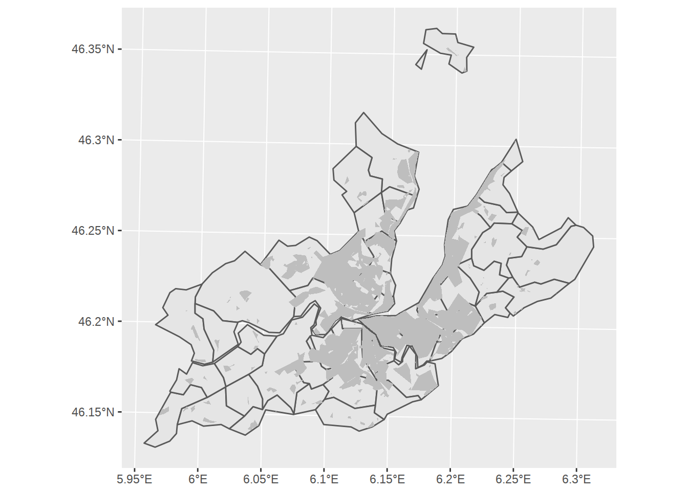
To plot the borders of the communes above the building areas, we can call geom_sf twice rather than once. Remember that ggplot chart work as stack of layers, so each additional geom goes on top of the previous ones.
# Create ggplot
ggplot() +
# Add polygons for communes, default fill, no border
geom_sf(data=communes_no_water_simplified, color=NA) +
# Add polygons for buildings, fill grey, no border
geom_sf(data=buildings_geneva, fill="grey", color=NA) +
# Add polygons for communes, no fill, default border
geom_sf(data=communes_no_water_simplified, fill=NA) +
labs(title="Geneva communes and buildings")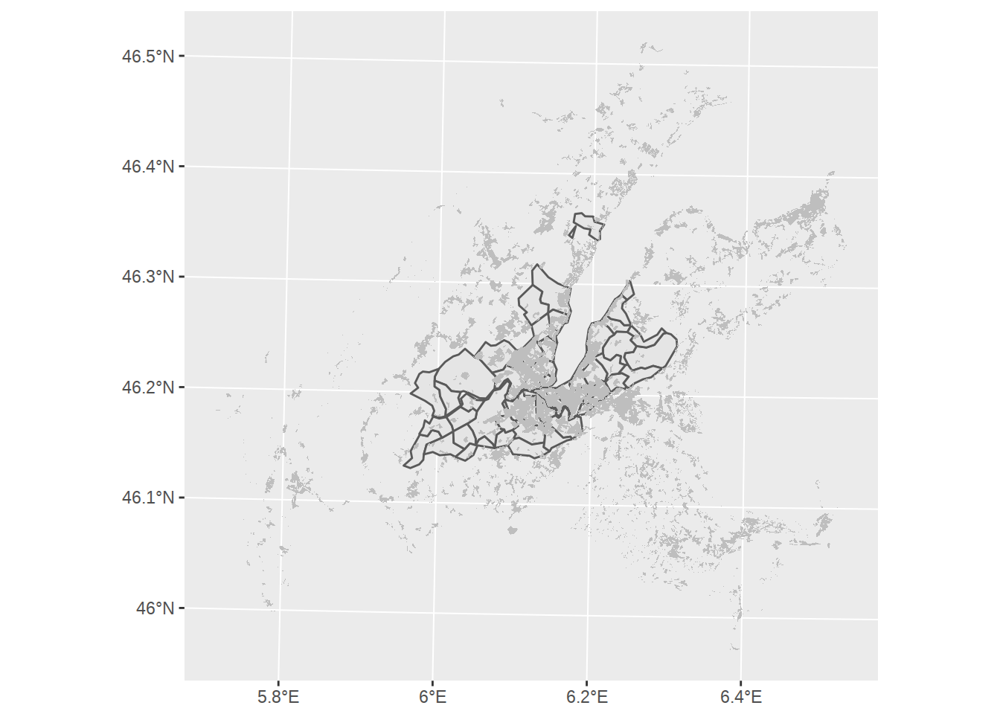
Let’s do the same with the forest areas. When I tried to use st_intersection here, I got TopologyException errors and warnings about Self-intersection. Adding calls to st_make_valid where you get these errors seems to fix the issues.
forest_zones <- c(
"Zone de verdure"
,"Zone naturelle ou forestière"
)
forests_geneva <-
zones %>%
filter(LIBFVG %in% forest_zones) %>%
ms_simplify(keep=0.005) %>%
st_make_valid() %>%
st_intersection(st_union(communes_no_water_simplified))## Warning: attribute variables are assumed to be spatially constant
## throughout all geometriesggplot() +
# Add polygons for communes, default fill, no border
geom_sf(data=communes_no_water_simplified, color=NA) +
# Add polygons for buildings, fill grey, no border
geom_sf(data=buildings_geneva, fill="grey", color=NA) +
# Add polygons for forests, fill grey, no border +
geom_sf(data=forests_geneva, fill="darkgreen", alpha=0.2, color=NA)+
# Add polygons borders for communes, no fill, default border
geom_sf(data=communes_no_water_simplified, fill=NA) +
labs(title="Geneva communes, buildings and forests")
If we got carried away, we could even add the agricultural fields to the map.
fields_geneva <-
zones %>%
filter(LIBFVG == "Zone agricole ou viticole") %>%
ms_simplify(keep=0.005) %>%
st_make_valid() %>%
st_intersection(st_union(communes_no_water_simplified))## Warning: attribute variables are assumed to be spatially constant
## throughout all geometriesggplot() +
# Add polygons for communes, default fill, no border
geom_sf(data=communes_no_water_simplified, color=NA) +
# Add polygons for forests, fill green, no border +
geom_sf(data=forests_geneva, fill="darkgreen", alpha=0.2, color=NA)+
# Add polygons for agricultural area
geom_sf(data=fields_geneva, fill="yellow", alpha=0.1, color=NA)+
# Add polygons for buildings, fill grey, no border
geom_sf(data=buildings_geneva, fill="grey", color=NA) +
# Add polygons borders for communes, no fill, default border
geom_sf(data=communes_no_water_simplified, fill=NA) +
labs(title="Geneva communes, buildings, forests and fields")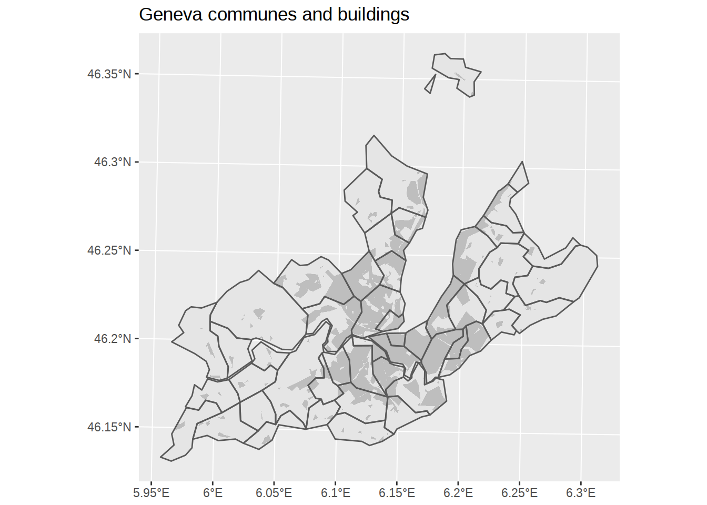
Adding back waters
What if we decided to add waters back?
ggplot() +
# Add lake and rivers
geom_sf(data=waters, fill="blue", color=NA) +
# Add polygons for communes, default fill, no border
geom_sf(data=communes_no_water_simplified, color=NA) +
# Add polygons for forests, fill green, no border +
geom_sf(data=forests_geneva, fill="darkgreen", alpha=0.2, color=NA)+
# Add polygons for agricultural area
geom_sf(data=fields_geneva, fill="yellow", alpha=0.1, color=NA)+
# Add polygons for buildings, fill grey, no border
geom_sf(data=buildings_geneva, fill="grey", color=NA) +
# Add polygons borders for communes, no fill, default border
geom_sf(data=communes_no_water_simplified, fill=NA) +
labs(title="Geneva communes, buildings, forests and fields",
subtitle="Water is misaligned...")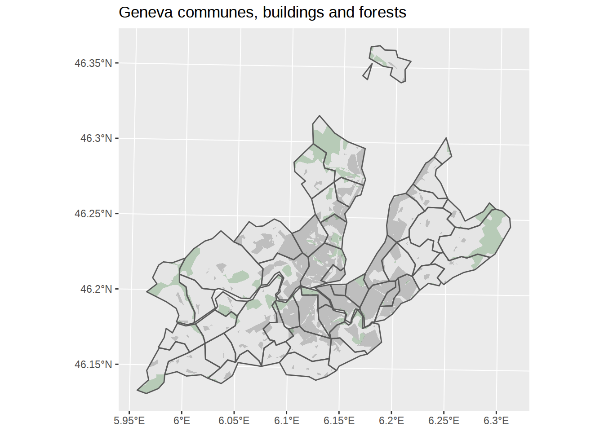
Unfortunately, our water borders cannot match our simplified communes map. Even if we apply exactly the same ms_simplify, it won’t do the trick.
waters_simplified <-
waters %>%
ms_simplify(keep_shapes=T, keep=0.02)
ggplot() +
# Add lake and rivers
geom_sf(data=waters_simplified, fill="blue", color=NA) +
# Add polygons for communes, default fill, no border
geom_sf(data=communes_no_water_simplified, color=NA) +
# Add polygons for forests, fill green, no border +
geom_sf(data=forests_geneva, fill="darkgreen", alpha=0.2, color=NA)+
# Add polygons for agricultural area
geom_sf(data=fields_geneva, fill="yellow", alpha=0.1, color=NA)+
# Add polygons for buildings, fill grey, no border
geom_sf(data=buildings_geneva, fill="grey", color=NA) +
# Add polygons borders for communes, no fill, default border
geom_sf(data=communes_no_water_simplified, fill=NA) +
labs(title="Geneva communes, buildings, forests and fields",
subtitle="Water, even simplified, is still misaligned...")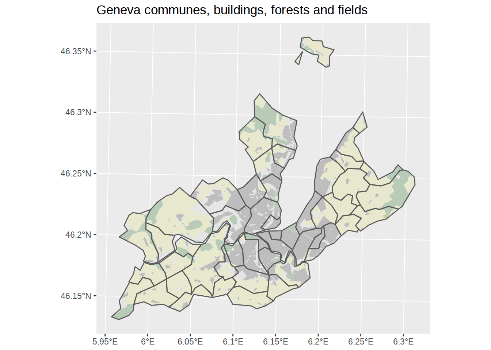
The solution is to apply put communes and water into the same sf object before applying ms_simplify.
#https://github.com/r-spatial/sf/issues/223
communes_and_water <-
communes %>%
# remove waters from the original communes
st_difference(st_union(st_combine(waters))) %>%
# apply the same columns names so that we
# can bind waters and communes sf objects
rename(NOM=COMMUNE) %>%
select(NOM, SHAPE_AREA, SHAPE_LEN) %>%
# add the waters polygons
rbind(waters) %>%
# simplify
ms_simplify(keep=0.01) %>%
st_make_valid()## Warning: attribute variables are assumed to be spatially constant
## throughout all geometriesggplot() +
geom_sf(data=communes_and_water) +
labs(title="Communes and waters in the same sf",
subtitle="Simplifed together at 0.01")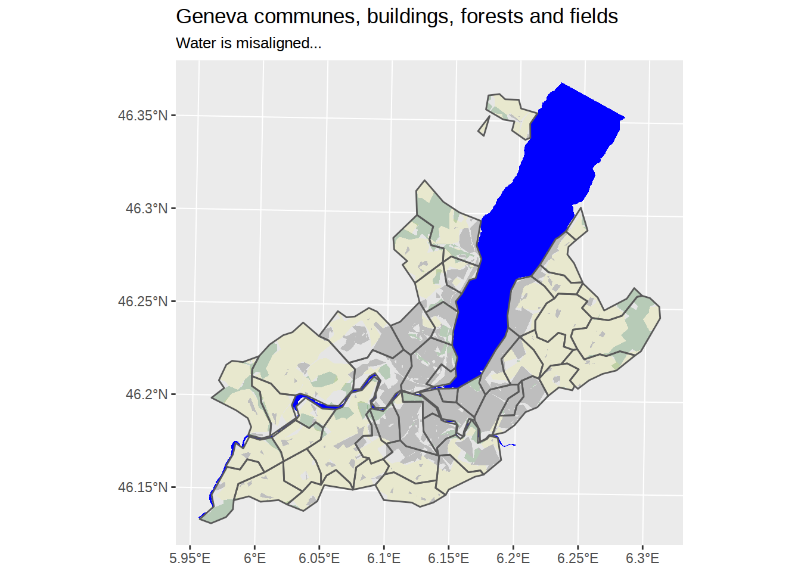
Now that borders are aligned, we can split communes and water again. This makes cropping other sf objects on communes, as well as applying different fill color much easier.
communes_simplified <-
communes_and_water %>%
filter(!(NOM %in% waters$NOM))
waters_simplified <-
communes_and_water %>%
filter(NOM %in% waters$NOM)
buildings_geneva <-
zones %>%
filter(LIBFVG %in% building_zones) %>%
ms_simplify(keep=0.005) %>%
st_make_valid() %>%
st_intersection(st_union(st_combine(communes_simplified)))## Warning: attribute variables are assumed to be spatially constant
## throughout all geometriesforests_geneva <-
zones %>%
filter(LIBFVG %in% forest_zones) %>%
ms_simplify(keep=0.005) %>%
st_make_valid() %>%
st_intersection(st_union(communes_simplified))## Warning: attribute variables are assumed to be spatially constant
## throughout all geometriesfields_geneva <-
zones %>%
filter(LIBFVG == "Zone agricole ou viticole") %>%
ms_simplify(keep=0.005) %>%
st_make_valid() %>%
st_intersection(st_union(communes_simplified))## Warning: attribute variables are assumed to be spatially constant
## throughout all geometriesggplot() +
# Add lake and rivers
geom_sf(data=waters_simplified, fill="lightblue", color=NA) +
# Add polygons for communes, default fill, no border
geom_sf(data=communes_simplified) +
# Add polygons for forests, fill green, no border +
geom_sf(data=forests_geneva, fill="darkgreen", alpha=0.2, color=NA)+
# Add polygons for buildings, fill grey, no border
geom_sf(data=buildings_geneva, fill="grey", color=NA) +
# Add polygons for agricultural area
geom_sf(data=fields_geneva, fill="yellow", alpha=0.1, color=NA)+
# Add polygons borders for communes, no fill, default border
geom_sf(data=communes_simplified, fill=NA) +
labs(title="Geneva communes, buildings and forests")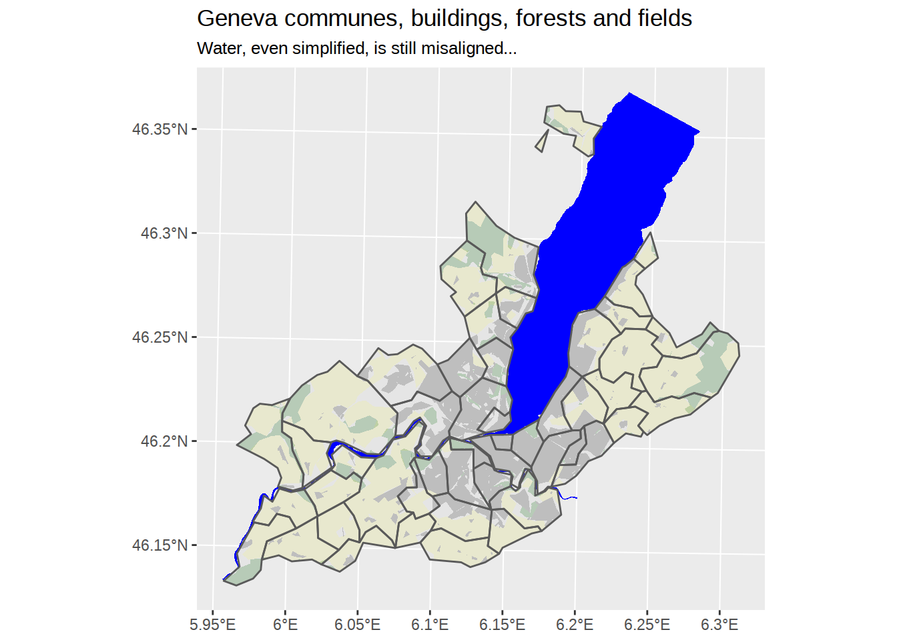
Final styling
library(hrbrthemes)
ggplot() +
# Add lake and rivers
geom_sf(data=waters_simplified, fill="lightblue", color="lightblue") +
# Add polygons for communes, default fill, no border
geom_sf(data=communes_simplified) +
# Add polygons for forests, fill green, no border +
geom_sf(data=forests_geneva, fill="lightgreen", color="lightgreen") +
# Add polygons for agricultural area
geom_sf(data=fields_geneva, fill="lightyellow", color="lightyellow") +
# Add polygons for buildings, fill grey, no border
geom_sf(data=buildings_geneva, fill="lightgrey", color="lightgrey") +
# Add polygons borders for communes, no fill, default border
geom_sf(data=communes_simplified, fill=NA, size=0.5, color="darkgrey") +
labs(title="Geneva Land Use",
subtitle="showing communes, buildings, forests and fields") +
theme_ipsum()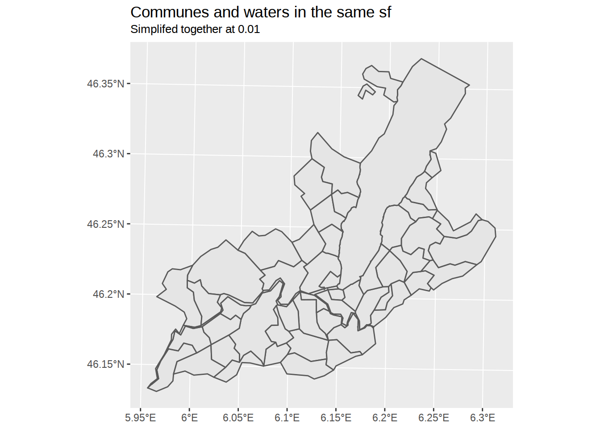